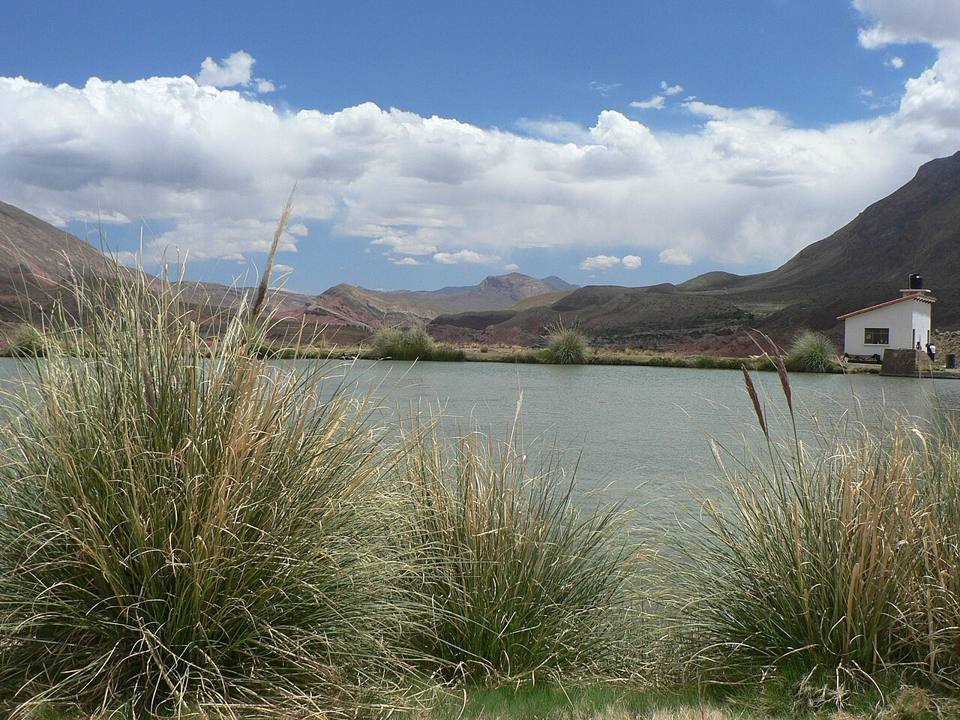
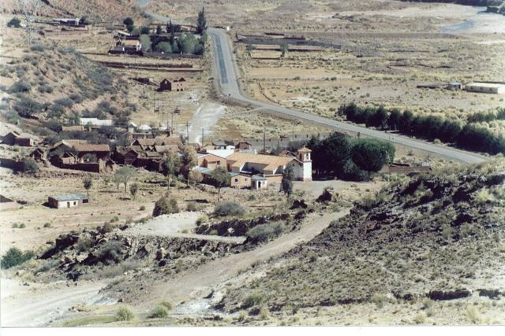
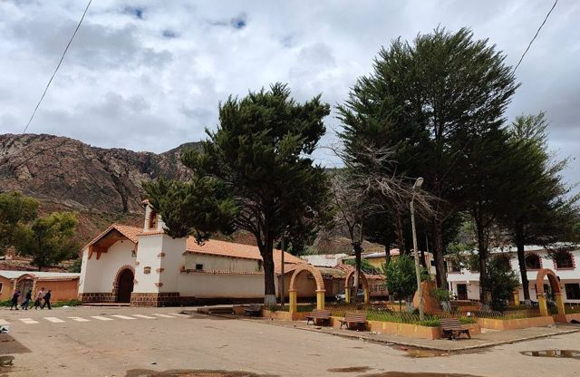

Ojo del Inca (Tarapaya)
Potosí Department · Nature and hiking

Near the village of Tarapaya, the Ojo del Inca is a crater filled with naturally warm, deep green water where you can swim facing the mountains. After the cold of Potosí and a mine visit, it's the perfect half-day outing to relax.
3,600 maltitude
0 to 1 dayto spend there
High altitude. Above 3,500 m, altitude sickness (soroche) is common. Arrive gradually, drink plenty and take it slow on the first day.
Things to do
- Swim in the warm lagoon
- Tarapaya thermal pools
- Half a day from Potosí
What to eat
- KalapurkaPotosí's spicy corn soup, served bubbling thanks to a volcanic stone heated in the fire.
- SalteñaBolivia's pastry: slightly sweet dough with a juicy filling of meat, potato and olives. Eaten in the morning, without spilling the juice!
Tip. Minibus or taxi from Potosí, then a 15 to 20 minute walk. The lagoon is deep: swim carefully.
How to get to Ojo del Inca
Potosí Road (bus, car) · 30 min
Minibus to Tarapaya, then 15 to 20 min on foot to the lagoon.
Photos of Ojo del Inca (Tarapaya)




More places in this region
 PotosíOnce the richest city in the world thanks to the silver of Cerro Rico. UNESCO-listed.
PotosíOnce the richest city in the world thanks to the silver of Cerro Rico. UNESCO-listed. SucreThe “white city” and constitutional capital: the most beautiful colonial city in the country.
SucreThe “white city” and constitutional capital: the most beautiful colonial city in the country. TarabucoBig Sunday market of the Yampara communities, with remarkable textiles.
TarabucoBig Sunday market of the Yampara communities, with remarkable textiles.- CandelariaA Yampara village beyond Tarabuco: an old hacienda, weaving and rural tourism.
- ZudáñezA small valley town linked to the wars of independence, east of Sucre.
 Maragua CraterA giant syncline in reds and purples, with Jalq'a weaving villages.
Maragua CraterA giant syncline in reds and purples, with Jalq'a weaving villages.